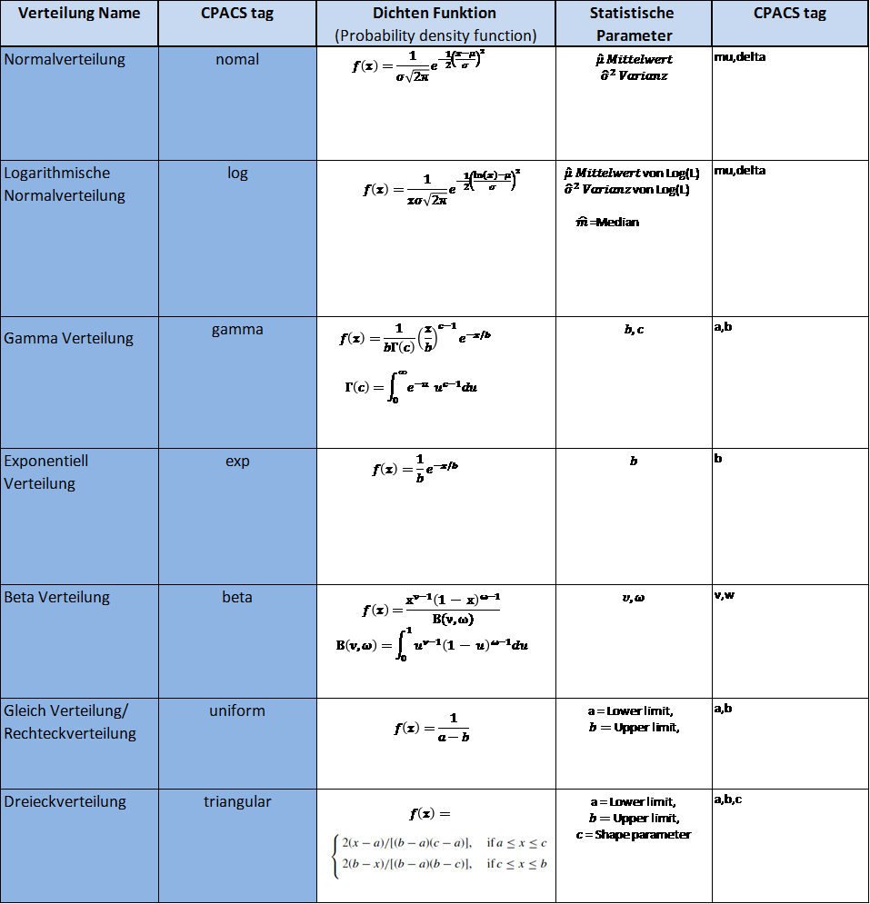

complexType · extension stringBaseType · value xsd:string
String vector base type
Base type for string vector nodes
The vector base type can include optional uncertainty information. The description of uncertainties is placed in additional attributes. First, it is described by an attribute that describes the type of uncertainty function called functionName. The functionName attribute includes the tag name of the distribution function which is listened in the table shown below. Each uncertainty function is further describes by a set of parameters that are described in the table below.
If the uncertainty values change for the elements of the vector than the attribute may be written as a list of values separated by semicolons
DEPRECATED: As of CPACS version 3.3, the mapType attribute is set to optional to ensure the compatibility of older data sets. However, since the type is uniquely defined via the XSD, the attribute is superfluous and will therefore be completely omitted in the next major release (Note: requires TiXI >= 3.3). Please contact the CPACS team if for any reason you see a long-term need for the mapType attribute.

| Name | Type | Constraints | Use | Default | Description |
|---|---|---|---|---|---|
@a | xsd:string | optional | Parameter a of the uncertainty distribution function | ||
@b | xsd:string | optional | Parameter b of the uncertainty distribution function | ||
@c | xsd:string | optional | Parameter c of the uncertainty distribution function | ||
@delta | xsd:string | optional | Parameter delta of the uncertainty distribution function | ||
@externalDataDirectory | xsd:string | optional | Directory of the external data file | ||
@externalDataNodePath | xsd:string | optional | Path of the node inside the external data file | ||
@externalFileName | xsd:string | optional | Name of the external data file | ||
@mapType | xsd:string | optional | vector fixed | Mapping type of the data, fixed to vector | |
@mu | xsd:string | optional | Parameter mu of the uncertainty distribution function | ||
@uncertaintyFunctionName | uncertaintyFunctionType | 2 values | optional | Name of the uncertainty distribution function | |
@v | xsd:string | optional | Parameter v of the uncertainty distribution function | ||
@w | xsd:string | optional | Parameter w of the uncertainty distribution function |
cpacs/vehicles/aircraft/model/wings/wing/componentSegments/componentSegment/controlSurfaces/leadingEdgeDevices/leadingEdgeDevice/tracks/track/trackStructure/jointPositions/jointPosition/controlParameterscpacs/vehicles/aircraft/model/wings/wing/componentSegments/componentSegment/controlSurfaces/trailingEdgeDevices/trailingEdgeDevice/tracks/track/trackStructure/jointPositions/jointPosition/controlParameterscpacs/vehicles/aircraft/model/wings/wing/componentSegments/componentSegment/controlSurfaces/spoilers/spoiler/tracks/track/trackStructure/jointPositions/jointPosition/controlParameterscpacs/vehicles/aircraft/model/systems/cockpitControls/stickPitch/pilotInputcpacs/vehicles/aircraft/model/systems/cockpitControls/stickPitch/commandOutputcpacs/vehicles/aircraft/model/systems/cockpitControls/stickRoll/pilotInputcpacs/vehicles/aircraft/model/systems/cockpitControls/stickRoll/commandOutputcpacs/vehicles/aircraft/model/systems/cockpitControls/pedals/pilotInputcpacs/vehicles/aircraft/model/systems/cockpitControls/pedals/commandOutputcpacs/vehicles/aircraft/model/systems/cockpitControls/cockpitControl/pilotInputcpacs/vehicles/aircraft/model/systems/cockpitControls/cockpitControl/commandOutputcpacs/vehicles/aircraft/model/systems/controlDistributors/controlDistributor/commandInputscpacs/vehicles/aircraft/model/systems/controlDistributors/controlDistributor/controlElements/controlElement/controlParameterscpacs/vehicles/aircraft/model/analyses/flightDynamics/trim/trimCase/linearModel/aLoncpacs/vehicles/aircraft/model/analyses/flightDynamics/trim/trimCase/linearModel/bLoncpacs/vehicles/aircraft/model/analyses/flightDynamics/trim/trimCase/linearModel/cLoncpacs/vehicles/aircraft/model/analyses/flightDynamics/trim/trimCase/linearModel/dLoncpacs/vehicles/aircraft/model/analyses/flightDynamics/trim/trimCase/linearModel/aLatcpacs/vehicles/aircraft/model/analyses/flightDynamics/trim/trimCase/linearModel/bLatcpacs/vehicles/aircraft/model/analyses/flightDynamics/trim/trimCase/linearModel/cLatcpacs/vehicles/aircraft/model/analyses/flightDynamics/trim/trimCase/linearModel/dLatcpacs/vehicles/aircraft/model/analyses/flightDynamics/flyingQualities/flyingQualitiesCase/longitudinal/numQFescpacs/vehicles/aircraft/model/analyses/flightDynamics/flyingQualities/flyingQualitiesCase/longitudinal/numThecpacs/vehicles/aircraft/model/analyses/flightDynamics/flyingQualities/flyingQualitiesCase/longitudinal/numTheFescpacs/vehicles/aircraft/model/analyses/flightDynamics/flyingQualities/flyingQualitiesCase/longitudinal/numAlFes| Type | Name |
|---|---|
aeroPerformanceMapRCType | altitude |
aeroPerformanceMapRCType | angleOfAttack |
aeroPerformanceMapRCType | angleOfSideslip |
aeroPerformanceMapRCType | machNumber |
cockpitControlType | commandOutput |
cockpitControlType | pilotInput |
controlDistributorType | commandInputs |
controlElementType | controlParameters |
controlSurfaceDeflectionVectorType | controlParameters |
controlSurfaceHingeMomentMapType | controlParameters |
controlSurfacePerformanceMapOldType | relDeflection |
cst2DType | lowerB |
cst2DType | psi |
cst2DType | upperB |
curveParamPointMapType | paramOnCurve |
curveParamPointMapType | pointIndices |
curvePointListXYZType | kinkIndices |
curvePointListXYZType | x |
curvePointListXYZType | y |
curvePointListXYZType | z |
designParameterType | values |
designSpaceType | status |
emissivityMapType | diffuseEmissivity |
emissivityMapType | waveLength |
enginePerformanceMapType | eiCO |
| and 118 more | |